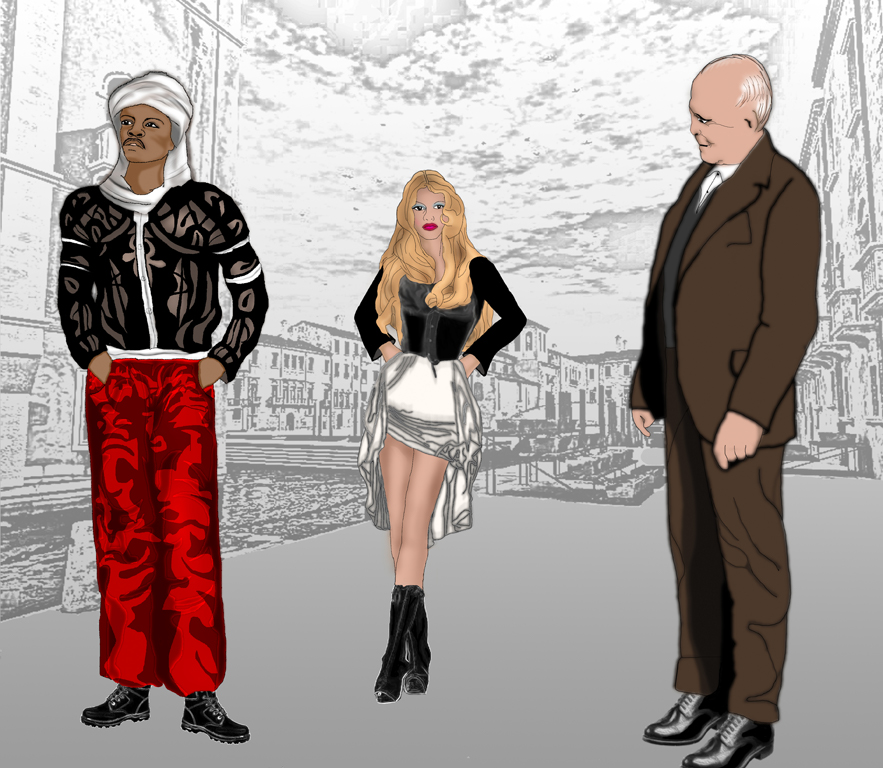

MVB -mariavarg
"Desdemona, the daughter of Venice"
copyright©: mariavarg
(My own Othello –inspired work (in Greek), in iambic fifteen –syllable poetic meter: see link at the bottom for the PDF)
copyright©: mariavarg
Click on image to enlarge
"Original Design by mariavarg(img1)"copyright©: mariavarg
Plot, Characters, Locations:
The core of my play is Shakespeare’s Othello, but taking it into a different direction.
Venezia: Narrator introducing the story, Iago (alone) shouting outside Brabantio’s house, Desdemona has eloped with Othello.
Brabantio, awaken, heads to the Doge’s palace, faces Othello.
Othello, summoned by the Doge, as member of the war council, is yet unaware of why the Doge has summoned him.
Othello confronts Brabantio about his marriage to Desdemona.
The Doge, tries to reconcile Brabantio and Othello, calls for Desdemona, she admits to be in love, not only moved by Othello’s sufferings, but desires him sexually.
Brabantio accepts the Doge’s decision, warns Othello about Desdemona and betrayal. The war council decides to defend Cyprus.
Othello must leave immediately, Desdemona begs the Doge to leave with him, the Doge accepts.
Iago’s jealousy: had asked for Desdemona in marriage, and was rejected, was in love with Desdemona’s fortune and social status, wants to be General.
Othello and Desdemona, with Iago (who has been named second in command) leave for Cyprus.
Othello and the Venetians face the Turks in battle, Turkish fleet destroyed, with the help of the weather.
Cyprus, Othello’s castle: Iago and Othello are training for fight.
Iago, wounded in training, goes to Desdemona, asks for the handkerchief that heals all wounds, a present from Othello’s mother.
Desdemona hesitates, but gives in.
Iago, returns the handkerchief to Othello.
Othello calls for Desdemona, and asks for the handkerchief.
Desdemona lies about it.
Othello, tells Desdemona, that it’s magic –only linked to them, if polluted with stranger’s blood is cursed, curse being adultery.
Othello banishes Desdemona from his chambers.
Iago, secretly, sending messages to Venezia, Othello has sided with the Turks, and is a corrupted General and Governor for Cyprus.
A Venetian delegation arrives in Cyprus, to investigate, led by Ludovico, Desdemona’s cousin.
The welcome feast: Othello – drunk, insults Desdemona, and accuses her of adultery.
Next morning: Othello faces the Venetian delegation, about the accusations of siding with the Turks, and about his wish to divorce Desdemona.
The Venetian delegation finds Othello not guilty, Othello asks about the accusations against him, and Ludovico informs him –it was Iago.
Othello accuses Desdemona of siding with Iago, Emilia, who at all times was present with Desdemona, tries to speak the truth, Iago attacks and kills her.
Othello, attacks Iago and kills him, then, commits suicide. Desdemona lives, but alone.
Narrator: Epilogue.
Summary, PDF -copyright©: mariavarg